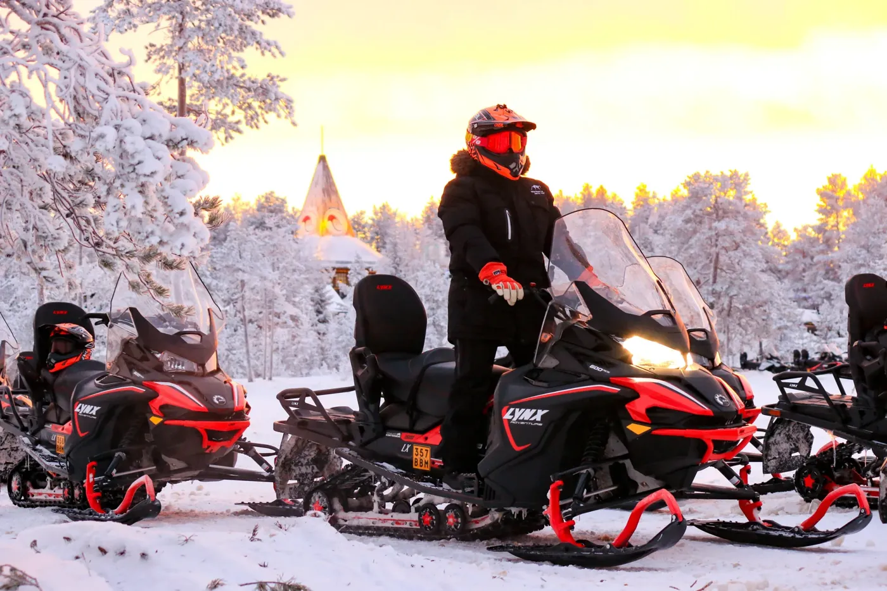
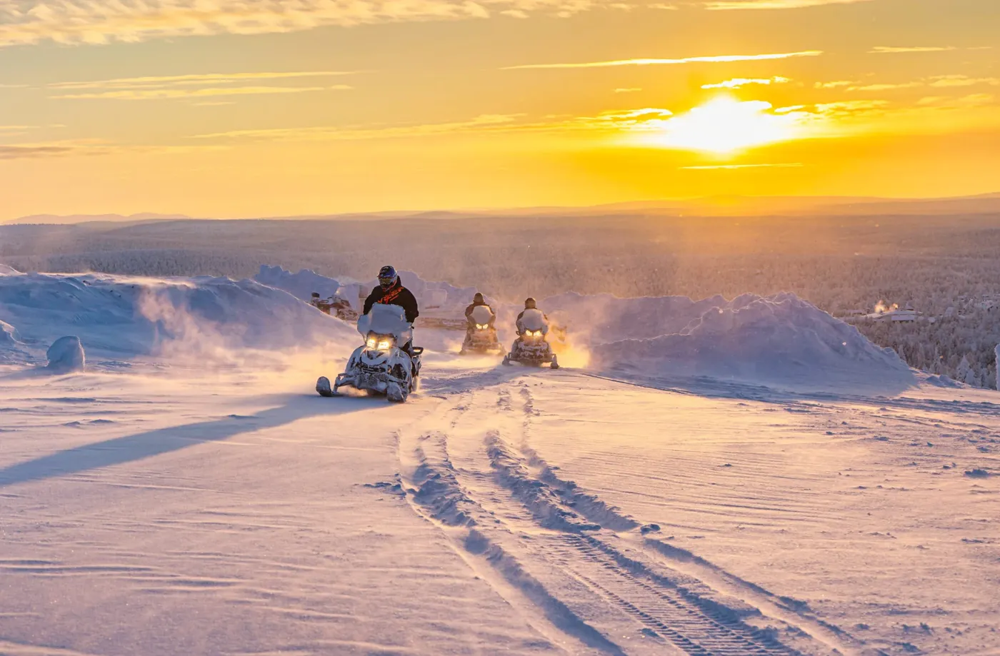
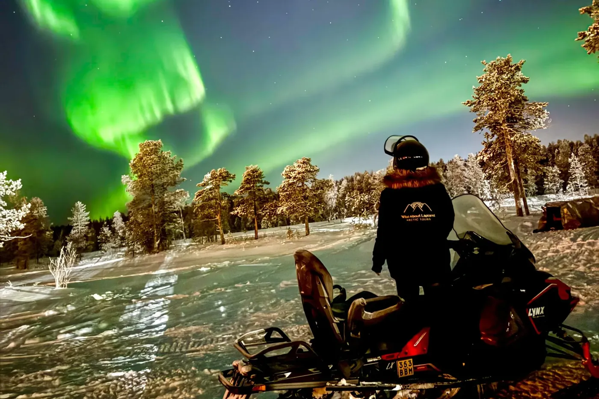
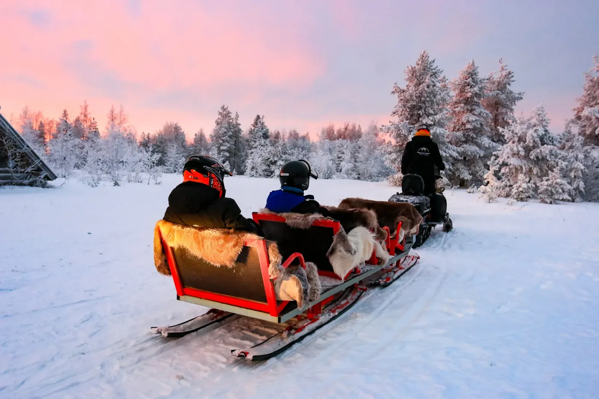
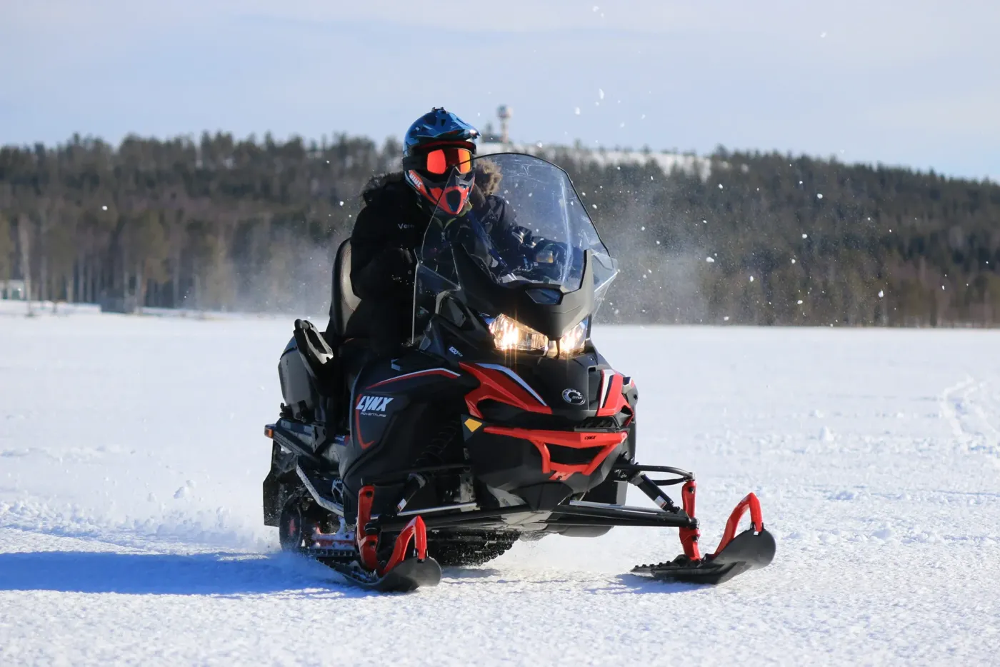
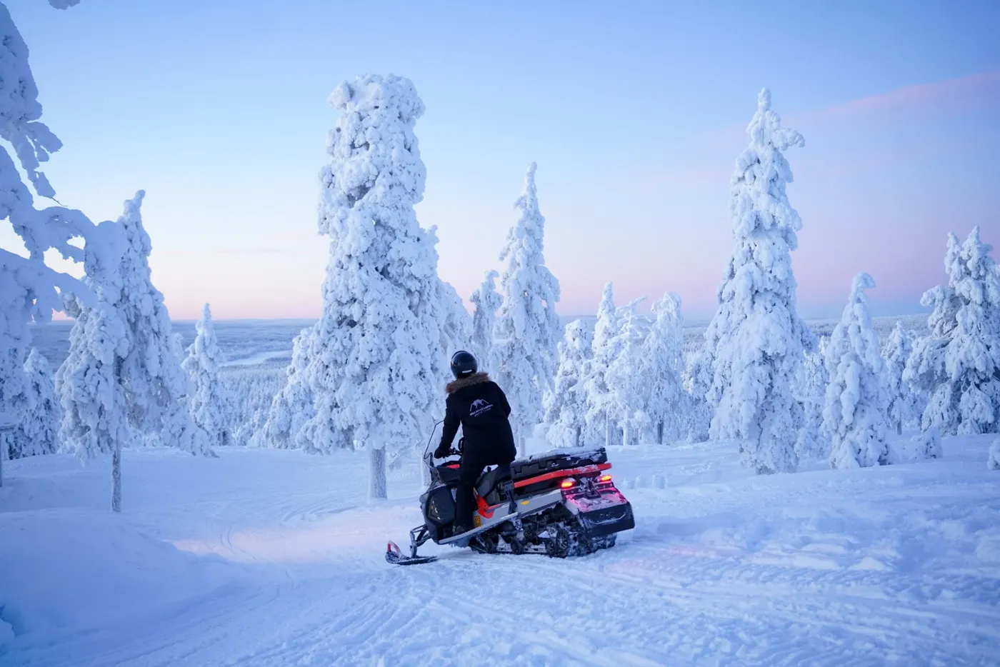

1-hour snowmobile safari
A short first go on a snowmobile: a safety briefing, then an hour on forest trails behind your guide.
- 2 hours, 1 hour driving
- Ages 18+
- €110 per adult, two per snowmobile · Own snowmobile €175
Guided snowmobile safaris from Rovaniemi: a first one-hour ride, longer trips through the taiga, evening northern lights safaris, family options and private rides. Tell us your dates and we check availability and book it for you.
Start building your trip
A short first go on a snowmobile: a safety briefing, then an hour on forest trails behind your guide.

A longer ride through snowy taiga forest and frozen landscapes, with a warm drink break halfway.

Drive a snowmobile into the forest after dark, with campfire stops and a chance of northern lights.

An evening snowmobile ride for the whole family. Adults drive, children ride in a sledge pulled by the guide.

Your own snowmobile guide, a start time that suits you, and a ride through taiga forest just for your group.
A daytime snowmobile ride for the whole family. Adults drive, children ride in a sledge pulled by the guide.

A long day on the snowmobile, deeper into the wilderness, with lunch by the fire in a traditional wooden kota.
Prices are per person unless stated otherwise and include all taxes. Final prices and times come with your plan. Pickup and availability are confirmed when we reply.